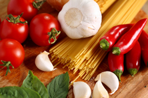

What Makes Utah Cooking Special? | Native Cooking of Utah Goes Online... | Looking to the Future... | Press Releases

In 1997, Master Chef Pierre DeBois moved to Utah from New York where he owned and managed a small restaurant called Ma Maison (My Home). His restaurant specialized in French Nouvelle cuisine. Once in Salt Lake City, he realized that the average Utahan doesn't have much appreciation for high cuisine. Pierre and his family were invited to a neighborhood block party one summer and it was there he had his first encounter with Native Cooking of Utah. Pierre noticed how much the locals enjoyed the items brought to this pot luck dinner. They often went back for seconds or thirds. How could he capture this enthusiasm for eating and translate it into his own cooking? In order to answer this question, he began a year long quest to find out the reason for the success of Utah cuisine.

Pierre discovered there are some things that set apart Utah cooking from others:

So in 2010, Pierre DeBois began gathering recipes for an online cookbook titled: Native Cooking of Utah. Everywhere he could, he begged, borrowed or stole the secret recipes of popular Utah cooks. Many of these recipes had been handed down from generation to generation. In fact, the most well known recipe for green jello even was honored with its own Olympic pin.
The web site for Native Cooking of Utah organizes the recipes by area of the state. For example, salt water taffy from Salt Lake City, and Bear Lake Raspberry ice cream from Bear Lake. Chef Pierre DeBois has traveled the state to gather these recipes. Read the Guestbook to see comments and testimonials from satisfied cooks.
Native Cooking of Utah has become one of the most popular cooking sites in the Western U.S. with over 10,000 hits per week. Chef Pierre DeBois has plans to expand the site to include cooking utensils and kitchen accessories used or hand-made by native Utahans. Not only can you use this web site to help you to create true Utahan cuisine, now you can look the part. You will find these added treats online after January, 2013.
| Product | Description |
|---|---|
| Cooking Pots | Most often rounded with open mouths and somewhat sharply rounded bottoms. |
| Antique Bowls | Wonderfully carved, thin and lightweight despite its large dimensions-13” X 18”. |
| Gourds | Made functional light-weight bowls, dippers, and spoons. |
| Soapstone Bowl | Not as finely made, but fairly representative of many found in archaeological digs. |
| Deer Jaw Bone | Works very well at scraping juicy corn kernels from the cob. |
"Master Chef Pierre DeBois captures the Native Cooking of Utah in his online web site: Native Cooking of Utah. Browsing his web site is like having a family reunion where everyone brings along their favorite recipes and shares them. If you are an Utahan and no longer live in the state, these recipes will make you home sick for that down home cooking."
"Site Number 66 - Whether you are living in Utah or just visiting, you can cook like a true native if you use Native Cooking of Utah as your guide. This web site will allow you to come up to speed and fit in like a native Utahan right away. Reap praise from strangers and surprise your family with your down home cooking. You won't have to worry about storing leftovers with these tried and true recipes."